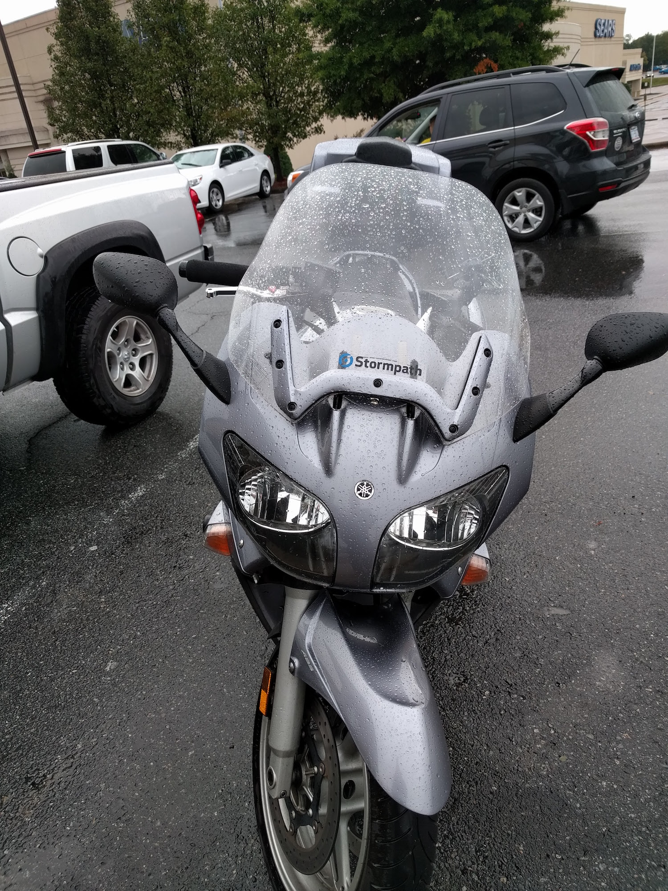
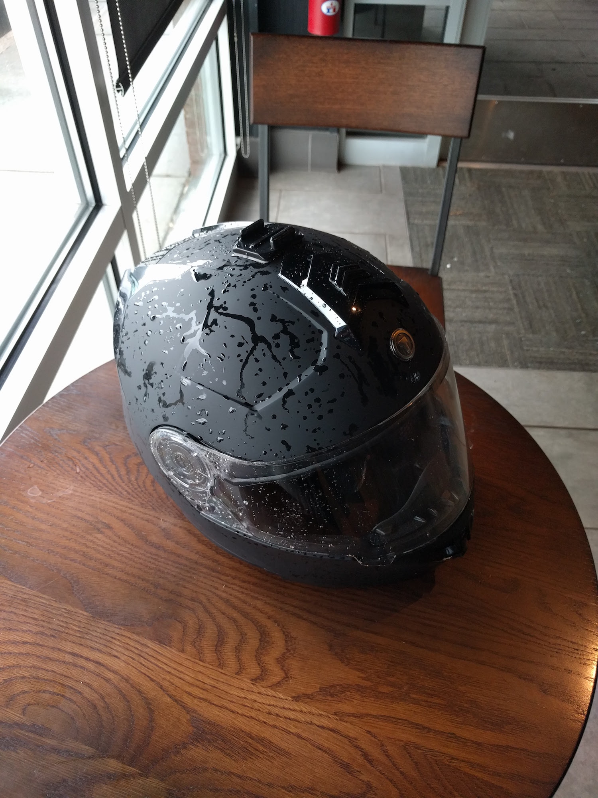
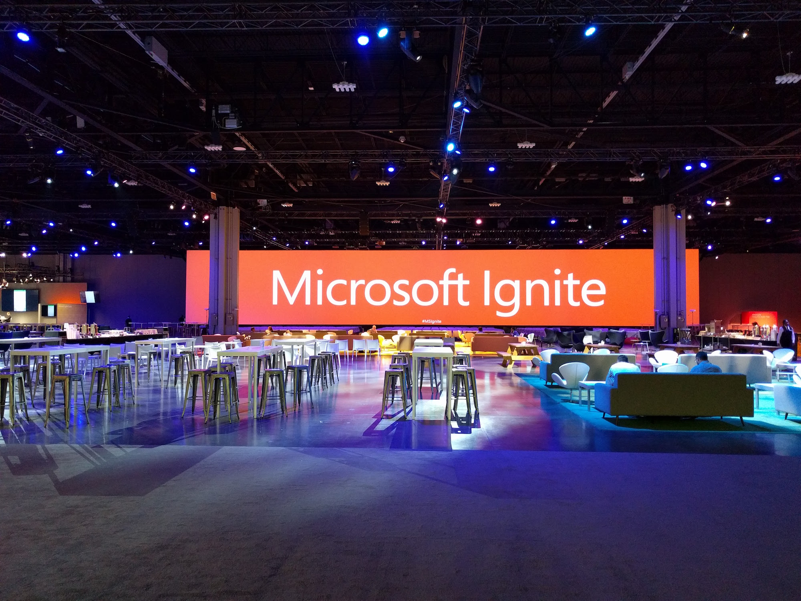
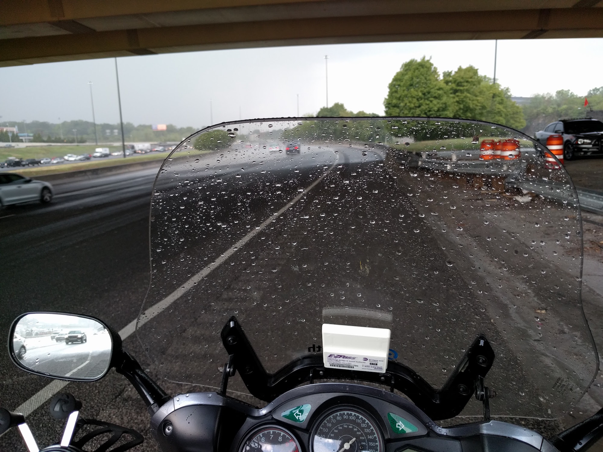
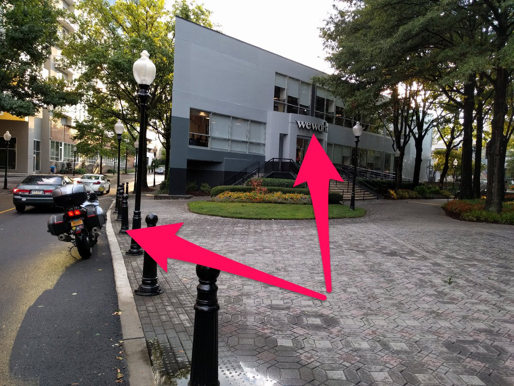

Java RoadStorm Tour - 2016

I'm Micah Silverman and I am Stormpath's Java Developer Evangelist.
Beginning on September 24th, I will be riding my Yamaha FJR1300A from New York, NY to Atlanta, Georgia and back. Along the way, I will be giving a talk on "Securing Microservices with JWT's (JSON Web Tokens) using the JJWT library". My presentation is based on the talk I gave at NY JavaSIG and a webinar on the same topic.
Watch for my daily dispatches from the road.
Here's the current schedule of talks:
| Date Time |
Location | Host | Address | RSVP |
|---|---|---|---|---|
| 9/27 7:00PM |
Atlanta, GA | WeWork & AJUG | 3340 Peachtree Rd NE, Atlanta, GA 30326 | RSVP |
| 10/3 6:00PM |
Charleston, SC | The Iron Yard - Charleston | 17 Princess Street, Charleston, SC | RSVP |
| 10/4 6:00PM |
Charlotte, NC | The Iron Yard - Charlotte | 222 S Church St, floor 1M, Charlotte, NC | RSVP |
| 10/5 6:00PM |
Richmond, VA | IPPON & RJUG | 2700 East Cary Street, Suite C – Richmond, VA 23223 | RSVP |
| 10/6 6:00PM |
Washington, DC | DCJUG | Sapient Government Services, 1515 N Courthouse Rd, 4th Floor, Arlington, VA, 22201 | RSVP |
| 10/7 7:00PM |
Philadelphia, PA | Benjamin's Desk & Philly JUG | 1701 Walnut Street 7th Floor, Philadelphia, PA 19103 (The Allman Building) | RSVP |
| 10/17 7:00PM |
Long Island, NY | WorkMarket & CodeStrong Island | 7 High St., Huntington, NY | RSVP |
NY JavaSIG Talk
Stormpath Webinar
Here's the route I'll be taking:
I'll be posting daily dispatches from the road here.
Day One: 9/24
|-- top --||-- schedule --||-- route --|
On the Road: Not surprisingly, it took me two hours to escape the gravitational field that is New York City. Once I got through to New Jersey, it was clear sailing. I did my first GoPro test today. It's mounted on my helmet. (You may want to turn your sound down at 45 seconds in - it's all wind noise from that point on)
Motorcycle Fun Fact: Did you know that if you want to negotiate a right curve on a motorcycle, you start by nudging the handlebars to the left? This is called countersteering. The initial push to the left causes the motorcycle to lean to the right.
Tech Quote of the Day: Debugging is twice as hard as writing the code in the first place. Therefore, if you write the code as cleverly as possible, you are, by definition, not smart enough to debug it. -Brian W. Kernighan
Day Two: 9/25
|-- top --||-- schedule --||-- route --|
On the Road: Today was the "big push": an ambitious ride from Delaware to deep within North Carolina - nearly to South Carolina. I rode nearly 480 miles! Here's the route:
I took some GoPro footage while crossing the Delware Memorial Bridge (you may want to mute your audio as there's a lot of wind noise):
Here's my Day 2 Playlist:
Motorcycle Fun Fact: Harry Hurt (yes, that's his real name) published the Hurt Report - called the "most most comprehensive motorcycle safety study of the 20th century." Amongst the findings, two results stood out: (1) that 2/3 of motorcycle/car crashes occur when the car violates the motorcycle's right-of-way. And (2) that helmets significantly reduce the occurrence of death and brain damage while NOT increasing the occurrence of neck injuries. (So, read up if you're in a state without a helmet law!)
Tech Quote of the Day: “When you see commented-out code, delete it!” -Robert ("Uncle Bob") Martin
Day Three: 9/26
|-- top --||-- schedule --||-- route --|
On the Road: Todays ride was almost tougher than yesterday's, even though it was 200 miles shorter. It rained in the morning, so I got soaked. But, thanks the the prevalence of Starbucks, I quickly got off the road and chilled out for a few hours. Then, there was a massive accident on I-85 between South Carolina and Georgia. Fortunately I was no where near it. Google Maps routed me around, which truthfully, was the best part of the ride.

I finally made it to Atlanta and Microsoft Ignite.

You may be asking yourself, "Why is Java Roadstorm at Microsoft Ignite?" I am helping out with the Stormpath booth, including any Java questions that may come our way.
Tomorrow, is my first talk on the tour hosted by WeWork & AJUG in Atlanta and sponsored by Stormpath. RSVP here.
Motorcycle Fun Fact: Swerving is dangerous in any vehicle, but especially so on a motorcycle. The rule-of-thumb regarding animals is that if it's small enough to eat in a single sitting, you can (relatively) safely run it over with your motorcycle. Not the I am advocating the killing of animals by motorcycle, but if it's a squirrel that darts out into the road, it's a lot safer for you and those around you to NOT swerve to avoid it.
Tech Quote of the Day: There are only two hard things in Computer Science: cache invalidation, naming things, and off-by-one errors. -Phil Karlton (Leon Bambrick added the "off by one" part)
Day Four: 9/27
|-- top --||-- schedule --||-- route --|
NOTE: I am at the MS Ignite conference for the next two days and then a two day visit with my Uncle and Aunt in South Carolina. Next dispatch will be on 10/3 after my talk at The Iron Yard Charleston.
On the Road: Today's only riding was to get from the Microsoft Ignite conference to WeWork over in Buckhead and then back to the hotel. Well, that turned out to be more of a challenge than I thought thanks to a 45 minute Georgia thunderstorm. I found a lovely overpass to hangout under until the weather cleared up and then continued on my way.

Thanks to WeWork for hosting at their offices and to AJUG for getting the word out! And, big thanks to Stormpath for sponsoring this whole tour. 
Motorcycle Fun Fact: You may have heard of or seen a motorcycle accident involving a telephone pole or a street sign. You may have wondered, "How did a rider hit such a relatively small target?" The answer is that, when less experienced riders get into a jam, they tend to fixate on the object they are heading toward and then hit it. More experienced riders know that to avoid an object, you must look away from where the bike is going and instead look to where you want the bike to be.Tech Quote of the Day: The amateur software engineer is always in search of magic, some sensational method or tool whose application promises to render software development trivial. It is the mark of the professional software engineer to know that no such panacea exist. -Grady Booch